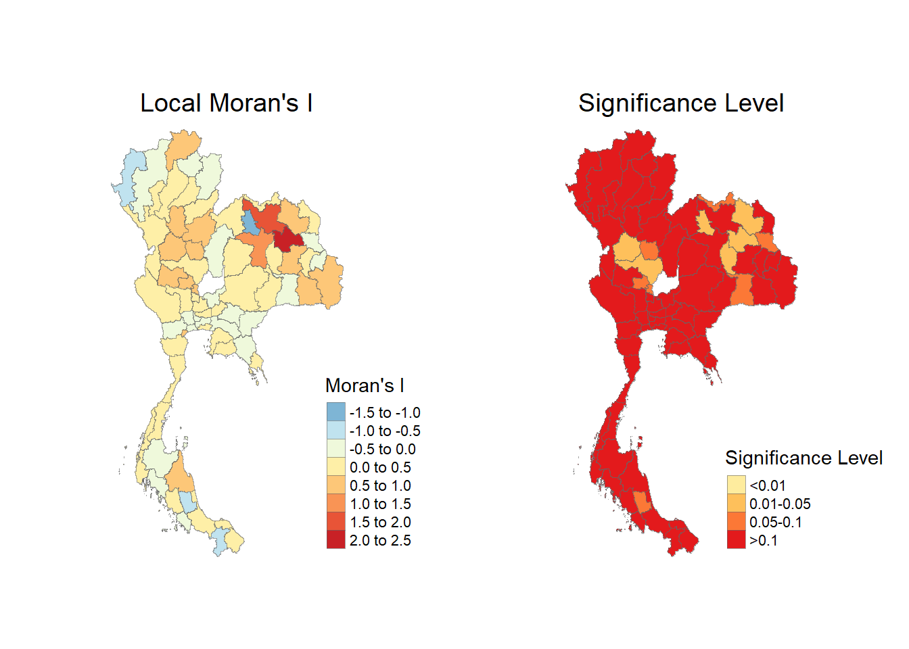
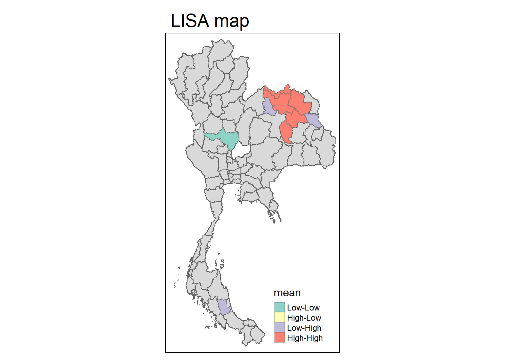
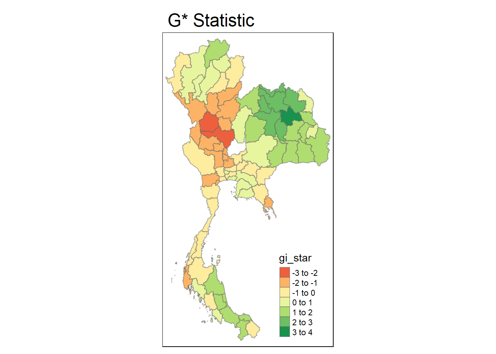
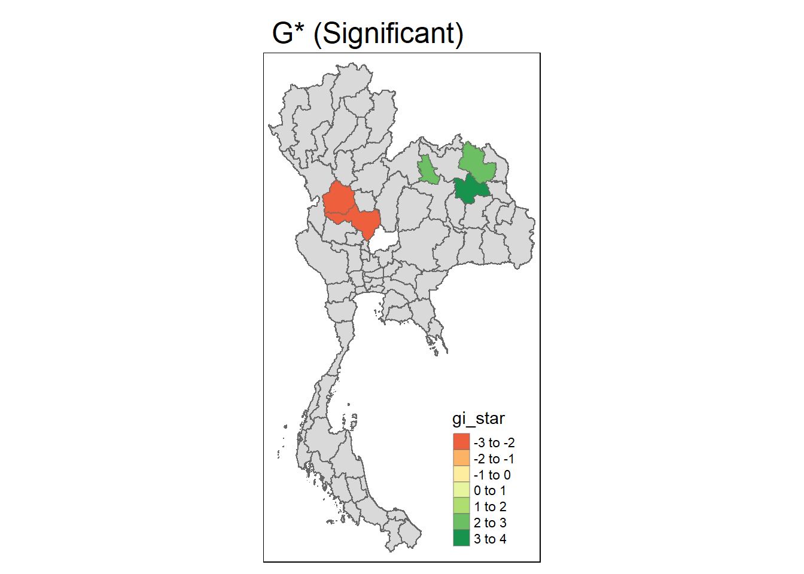

pacman::p_load(sfdep, tidyverse, sf, tmap, lubridate, spatstat, raster, sparr, spdep)Take Home 2
Take-home Exercise 2: Application of Geospatial Analysis Methods to Discover Thailand Drug Abuse at the Province Level
Packages
There are pointless packages here, however you never know when you’ll need something. Import for this project include:
spdepused fortmapused for visualizations
Drug Offenses Data Import
drug <- read_csv("data/2data/thai_drug_offenses_2017_2022.csv")Administrative Boundaries Import
thai <- st_read(dsn="data/2data/e/tha_admbnda_adm1_rtsd_20220121.shp")Reading layer `tha_admbnda_adm1_rtsd_20220121' from data source
`C:\Users\thevi\OneDrive\Desktop\IS415\IS415\take-home\data\2data\e\tha_admbnda_adm1_rtsd_20220121.shp'
using driver `ESRI Shapefile'
Simple feature collection with 77 features and 16 fields
Geometry type: MULTIPOLYGON
Dimension: XY
Bounding box: xmin: 97.34336 ymin: 5.613038 xmax: 105.637 ymax: 20.46507
Geodetic CRS: WGS 84Relational Join
Do a left join on Thai and Drug to combine the Administrative Boundaries and Drug Data. Then only select necessary columns.
thai_drug <- left_join(thai, drug, by = c("ADM1_EN" = "province_en")) %>%
dplyr::select(1:3, 14:19)Data Wrangling
Our data is now in theory ready to be analysed, however it won’t take us long to realize that our data is too poorly optimized to work in analysis, some data wrangling will help with that. There will be a few different version of the data set here for future use.
# Used to calculate weights
# It grabs one row for each province
thai_drug_unique <- thai_drug %>%
group_by(ADM1_EN) %>%
slice(1) %>%
ungroup()
# Used in Morans I Test
# Just grab 2022 data
morans_data <- thai_drug[thai_drug$fiscal_year == 2022, ]
morans_data <- morans_data[morans_data$types_of_drug_offenses %in% c("drug_use_cases", "possession_cases", "possession_with_intent_to_distribute_cases", "trafficking_cases", "production_cases", "import_cases", "export_cases", "conspiracy_cases"), ]
morans_data <- morans_data[morans_data$types_of_drug_offenses == "drug_use_cases", ]
#Phuket has zero neighbours, it had to be removed for future steps
morans_data <- morans_data %>%
filter(ADM1_EN != "Phuket")Perform global spatial autocorrelation analysis by using sfdep methods.
Create a Queens Contiguity Weights Matrix
st_weights() has three arguments
nb: neighbour list objects
style: W for row standardized weights, C globally standardised, U is C / n, S is variance-stabilised
allow_zero: if true, assigns zero as lagged value to zone without neighbours
wm_q <- morans_data %>%
mutate(nb = st_contiguity(geometry),
wt = st_weights(nb, style = "W"),
.before = 1)Compute Moran’s I
Calculate the Global Moran I, the output is a tibble data.frame.
moranI <- global_moran(wm_q$no_cases,
wm_q$nb,
wm_q$wt)
glimpse(moranI)List of 2
$ I: num 0.199
$ K: num 3.83I: is Moran’s IK: is the average number of Neighbors found
Performing Global Moran’s I Test
This is the thing you want to run, instead of computing the stats, you want to perform a test with them. use global_moran_test as shown below.
global_moran_test(wm_q$no_cases, wm_q$nb, wm_q$wt)
Moran I test under randomisation
data: x
weights: listw
Moran I statistic standard deviate = 2.7036, p-value = 0.00343
alternative hypothesis: greater
sample estimates:
Moran I statistic Expectation Variance
0.198502468 -0.013698630 0.006160519 Here we can see p-value = 0.00343, this is good because its lower than the confidence level of 0.05.
Permutation Test
Monte Carlo should be used to run the simulation. Its supported by sfdep.
# Set a seed for reproducibility
set.seed(1234)Very Similar to the other test but using global_moran_perm and adding the nsim, which is set to 99 for how many times its going to be run through.
global_moran_perm(wm_q$no_cases,
wm_q$nb,
wm_q$wt,
nsim = 99)
Monte-Carlo simulation of Moran I
data: x
weights: listw
number of simulations + 1: 100
statistic = 0.1985, observed rank = 100, p-value < 2.2e-16
alternative hypothesis: two.sidedHere we can see that the Moran I is statistic = 0.1985, which is what we were getting in earlier tests. This means that after running the simulation 100 times you still get the same results, therefore we know that Moran I is stable.
Using the extracted data, perform local spatial autocorrelation analysis by using sfdep methods.
Here we compute the local Moran’s I of GDPPC at county level by using the local_moran sfdep package.
lisa <- wm_q %>%
mutate(local_moran = local_moran(
no_cases , nb, wt, nsim = 99),
.before = 1) %>%
unnest(local_moran)This creates the lisa data.frame, with lots of helpful statistics, including what region is categorized as (HIGH/HIGH, p, var…..)
Lots of p values in this df, It’s reccomended that you stick with the same one. (Use p_ii_sim, this will make it the same as your simulation)
With the HIGH/LOW columns, the mean and media ones are the important ones.
Skewness can help you decide - high skew means you should pick the median
Visualising local Morans I
tmap_mode("plot")
# Map 1: Local Moran I
map1 <- tm_shape(lisa) +
tm_fill("ii",
palette = "-RdYlBu", # Reverse RdYlBu color palette for contrast
title = "Moran's I") + # Add title to legend
tm_borders(col = "gray40", lwd = 0.8, alpha = 0.6) + # Thicker, slightly transparent borders
tm_layout(main.title = "Local Moran's I",
main.title.size = 1.2, # Increase title size
main.title.position = "center", # Center the title
frame = FALSE) # Remove frame
# Map 2: Significance Level
map2 <- tm_shape(lisa) +
tm_fill("p_ii_sim",
palette = "YlOrRd", # Use a sequential palette for significance
title = "Significance Level",
style = "fixed", # Fix color breakpoints if needed
breaks = c(0, 0.01, 0.05, 0.1, 1), # Significance thresholds
labels = c("<0.01", "0.01-0.05", "0.05-0.1", ">0.1")) + # Label significance levels
tm_borders(col = "gray40", lwd = 0.8, alpha = 0.6) + # Same border styling
tm_layout(main.title = "Significance Level",
main.title.size = 1.2,
main.title.position = "center",
frame = FALSE)
# Arrange maps side by side
tmap_arrange(map1, map2, ncol = 2, asp = 1, outer.margins = 0.01) # Adjust aspect ratio and margins
Lisa Map Visualisation
The LISA Map Visualization is a combination of the p significance level and local moran I, it will graph the Moran correlations when the significance meets its required level (null hypothesis)
lisa_sig <- lisa %>%
filter(p_ii < 0.05)
tm_shape(lisa)+
tm_polygons()+
tm_borders(alpha=0.5)+
tm_shape(lisa_sig) +
tm_fill("mean")+
tm_borders(alpha=0.4)+
tm_layout(main.title = "LISA map")
Hot and Cold Spot Analysis
Compute Local G* Statistic
wm_idw <- morans_data %>%
mutate(nb = st_contiguity(geometry),
wts = st_inverse_distance(nb, geometry,
scale = 1,
alpha = 1),
.before = 1)In a similar way to LISA/Moran
set.seed(1234)
HCSA <- wm_idw %>%
mutate(local_Gi = local_gstar_perm(
no_cases, nb, wt, nsim = 99),
.before = 1) %>%
unnest(local_Gi)
HCSASimple feature collection with 74 features and 21 fields
Geometry type: MULTIPOLYGON
Dimension: XY
Bounding box: xmin: 97.34336 ymin: 5.613038 xmax: 105.637 ymax: 20.46507
Geodetic CRS: WGS 84
# A tibble: 74 × 22
gi_star cluster e_gi var_gi std_dev p_value p_sim p_folded_sim skewness
<dbl> <fct> <dbl> <dbl> <dbl> <dbl> <dbl> <dbl> <dbl>
1 -0.355 High 0.0150 0.00000832 -0.942 0.346 0.4 0.2 0.115
2 0.612 High 0.0140 0.0000145 0.705 0.481 0.42 0.21 0.577
3 0.0231 Low 0.0117 0.0000132 0.511 0.609 0.56 0.28 0.372
4 -0.621 Low 0.0129 0.00000979 -0.458 0.647 0.72 0.36 0.820
5 -1.09 Low 0.0132 0.0000116 -0.969 0.333 0.28 0.14 0.432
6 -1.28 Low 0.0122 0.0000182 -1.05 0.293 0.32 0.16 0.336
7 -1.66 Low 0.0123 0.0000155 -1.38 0.168 0.14 0.07 0.427
8 -1.80 Low 0.0116 0.0000147 -1.38 0.167 0.12 0.06 0.726
9 -0.125 Low 0.0121 0.0000105 0.269 0.788 0.64 0.32 0.756
10 0.639 High 0.0163 0.0000150 0.0346 0.972 0.98 0.49 0.284
# ℹ 64 more rows
# ℹ 13 more variables: kurtosis <dbl>, nb <nb>, wts <list>, Shape_Leng <dbl>,
# Shape_Area <dbl>, ADM1_EN <chr>, date <date>, validOn <date>,
# validTo <date>, fiscal_year <dbl>, types_of_drug_offenses <chr>,
# no_cases <dbl>, geometry <MULTIPOLYGON [°]>tm_shape(HCSA)+
tm_fill("gi_star")+
tm_borders(alpha=0.5)+
tm_layout(main.title = "G* Statistic")
HCSA_sig <- HCSA %>%
filter(p_sim < 0.05)
tm_shape(HCSA)+
tm_polygons()+
tm_borders(alpha=0.5)+
tm_shape(HCSA_sig)+
tm_fill("gi_star")+
tm_borders(alpha=0.4) +
tm_layout(main.title = "G* (Significant)")
Take-home Exercise 2: Application of Geospatial Analysis Methods to Discover Thailand Drug Abuse at the Province Level
Packages
package summary here
pacman::p_load(sfdep, tidyverse, sf, tmap, lubridate, spatstat, raster, sparr)Drug Offenses Data Import
drug <- read_csv("data/2data/thai_drug_offenses_2017_2022.csv")Administrative Boundaries Import
thai <- st_read(dsn="data/2data/e/tha_admbnda_adm1_rtsd_20220121.shp")Reading layer `tha_admbnda_adm1_rtsd_20220121' from data source
`C:\Users\thevi\OneDrive\Desktop\IS415\IS415\take-home\data\2data\e\tha_admbnda_adm1_rtsd_20220121.shp'
using driver `ESRI Shapefile'
Simple feature collection with 77 features and 16 fields
Geometry type: MULTIPOLYGON
Dimension: XY
Bounding box: xmin: 97.34336 ymin: 5.613038 xmax: 105.637 ymax: 20.46507
Geodetic CRS: WGS 84Relational Join
thai <- thai %>% rename(Province = ADM1_EN)
drug <- drug %>% rename(Province = province_en)
thai_drug <- left_join(thai, drug)